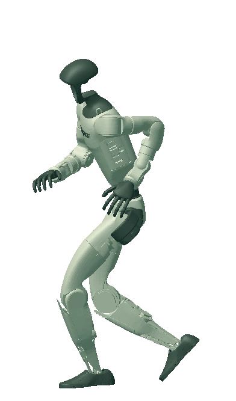
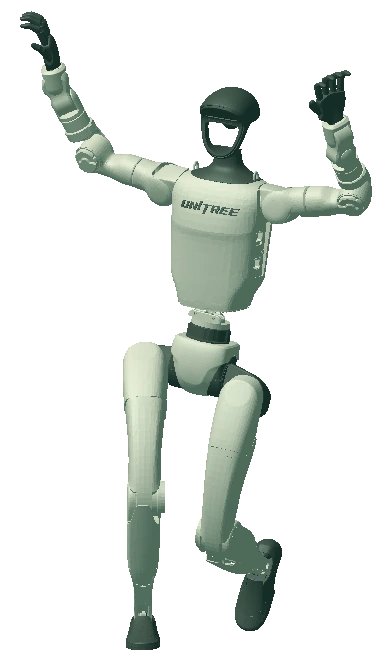

全身动作跟踪图解G1 / 29 关节
人形机器人
怎样学动作？
给 Unitree G1 一段参考动作。它每 20 毫秒为 29 个关节下指令，先在物理仿真里积累经验，再用世界模型推演每个动作的后果。
G1 参考舞步dance1_subject1 · 50 Hz


给 Unitree G1 一段参考动作。它每 20 毫秒为 29 个关节下指令，先在物理仿真里积累经验，再用世界模型推演每个动作的后果。

